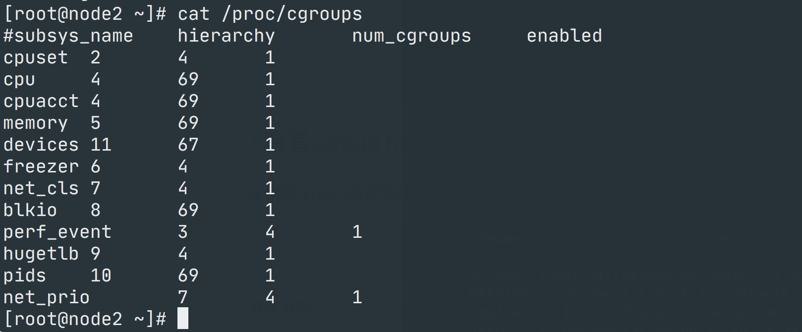
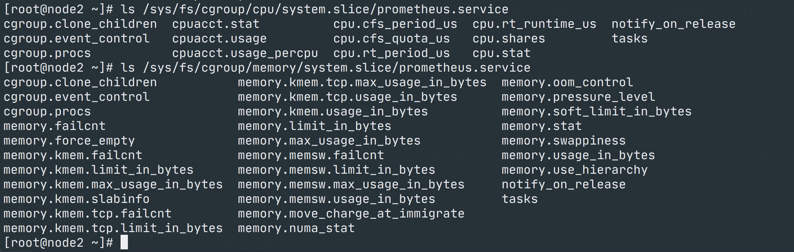

CGroups与Namespaces¶
本节我们来一起了解下容器背后的两个核心技术：CGroups 和 Namespace。
CGroups概述¶
CGroups 全称为 Linux Control Group，其作用是限制一组进程使用的资源（CPU、内存等）上限，CGroups 也是 Containerd 容器技术的核心实现原理之一，首先我们需要先了解几个 `CGroups 的基本概念：
- Task: 在 cgroup 中，task 可以理解为一个进程，但这里的进程和一般意义上的操作系统进程不太一样，实际上是进程 ID 和线程 ID 列表。
- CGroup: 即控制组，一个控制组就是一组按照某种标准划分的 Tasks，可以理解为资源限制是以进程组为单位实现的，一个进程加入到某个控制组后，就会受到相应配置的资源限制。
- Hierarchy: cgroup 的层级组织关系，cgroup 以树形层级组织，每个 cgroup 子节点默认继承其父 cgroup 节点的配置属性，这样每个 Hierarchy 在初始化会有 root cgroup。
- Subsystem: 即子系统，子系统表示具体的资源配置，如CPU使用，内存占用等，Subsystem附加到Hierarchy上后可用。
CGroups 支持的子系统包含以下几类，即为每种可以控制的资源定义了一个子系统:
- cpuset: 为 cgroup 中的进程分配单独的 CPU 节点，即可以绑定到特定的 CPU
- cpu: 限制 cgroup 中进程的 CPU 使用份额
- cpuacct: 统计 cgroup 中进程的 CPU 使用情况
- memory: 限制 cgroup 中进程的内存使用,并能报告内存使用情况
- devices: 控制 cgroup 中进程能访问哪些文件设备(设备文件的创建、读写)
- freezer: 挂起或恢复 cgroup 中的 task
- net_cls: 可以标记 cgroups 中进程的网络数据包，然后可以使用 tc 模块(traffic contro)对数据包进行控制
- blkio: 限制 cgroup 中进程的块设备 IO
- perf_event: 监控 cgroup 中进程的 perf 时间，可用于性能调优
- hugetlb: hugetlb 的资源控制功能
- pids: 限制 cgroup 中可以创建的进程数
- net_prio: 允许管理员动态的通过各种应用程序设置网络传输的优先级
通过上面的各个子系统，可以看出使用 CGroups 可以控制的资源有: CPU、内存、网络、IO、文件设备等。CGroups 具有以下几个特点：
- CGroups 的 API 以一个伪文件系统（/sys/fs/cgroup/）的实现方式，用户的程序可以通过文件系统实现 CGroups 的组件管理
- CGroups 的组件管理操作单元可以细粒度到线程级别，用户可以创建和销毁 CGroups，从而实现资源载分配和再利用
- 所有资源管理的功能都以子系统（cpu、cpuset 这些）的方式实现，接口统一子任务创建之初与其父任务处于同一个 CGroups 的控制组
我们可以通过查看 /proc/cgroups 文件来查找当前系统支持的 CGroups 子系统: 
在使用 CGroups 时需要先挂载，我们可以使用 df -h | grep cgroup 命令进行查看:
/sys/fs/cgroup，cgroup 其实是一种文件系统类型，所有的操作都是通过文件来完成的，我们可以使用 mount --type cgroup命令查看当前系统挂载了哪些 cgroup：
➜ ~ mount --type cgroup
cgroup on /sys/fs/cgroup/systemd type cgroup (rw,nosuid,nodev,noexec,relatime,xattr,release_agent=/usr/lib/systemd/systemd-cgroups-agent,name=systemd)
cgroup on /sys/fs/cgroup/cpuset type cgroup (rw,nosuid,nodev,noexec,relatime,cpuset)
cgroup on /sys/fs/cgroup/perf_event type cgroup (rw,nosuid,nodev,noexec,relatime,perf_event)
cgroup on /sys/fs/cgroup/cpu,cpuacct type cgroup (rw,nosuid,nodev,noexec,relatime,cpuacct,cpu)
cgroup on /sys/fs/cgroup/memory type cgroup (rw,nosuid,nodev,noexec,relatime,memory)
cgroup on /sys/fs/cgroup/freezer type cgroup (rw,nosuid,nodev,noexec,relatime,freezer)
cgroup on /sys/fs/cgroup/net_cls,net_prio type cgroup (rw,nosuid,nodev,noexec,relatime,net_prio,net_cls)
cgroup on /sys/fs/cgroup/blkio type cgroup (rw,nosuid,nodev,noexec,relatime,blkio)
cgroup on /sys/fs/cgroup/hugetlb type cgroup (rw,nosuid,nodev,noexec,relatime,hugetlb)
cgroup on /sys/fs/cgroup/pids type cgroup (rw,nosuid,nodev,noexec,relatime,pids)
cgroup on /sys/fs/cgroup/devices type cgroup (rw,nosuid,nodev,noexec,relatime,devices)
/sys/fs/cgroup 目录下的每个子目录就对应着一个子系统，cgroup 是以目录形式组织的，/ 是 cgroup 的根目录，但是这个根目录可以被挂载到任意目录，例如 CGroups 的 memory 子系统的挂载点是 /sys/fs/cgroup/memory，那么 /sys/fs/cgroup/memory/ 对应 memory 子系统的根目录，我们可以列出该目录下面的文件：
➜ ~ ll /sys/fs/cgroup/memory/
total 0
-rw-r--r-- 1 root root 0 Oct 21 10:10 cgroup.clone_children
--w--w--w- 1 root root 0 Oct 21 10:10 cgroup.event_control
-rw-r--r-- 1 root root 0 Oct 21 10:10 cgroup.procs
-r--r--r-- 1 root root 0 Oct 21 10:10 cgroup.sane_behavior
drwxr-xr-x 4 root root 0 Oct 21 10:10 kubepods.slice
-rw-r--r-- 1 root root 0 Oct 21 10:10 memory.failcnt
--w------- 1 root root 0 Oct 21 10:10 memory.force_empty
-rw-r--r-- 1 root root 0 Oct 21 10:10 memory.kmem.failcnt
-rw-r--r-- 1 root root 0 Oct 21 10:10 memory.kmem.limit_in_bytes
-rw-r--r-- 1 root root 0 Oct 21 10:10 memory.kmem.max_usage_in_bytes
-r--r--r-- 1 root root 0 Oct 21 10:10 memory.kmem.slabinfo
-rw-r--r-- 1 root root 0 Oct 21 10:10 memory.kmem.tcp.failcnt
-rw-r--r-- 1 root root 0 Oct 21 10:10 memory.kmem.tcp.limit_in_bytes
-rw-r--r-- 1 root root 0 Oct 21 10:10 memory.kmem.tcp.max_usage_in_bytes
-r--r--r-- 1 root root 0 Oct 21 10:10 memory.kmem.tcp.usage_in_bytes
-r--r--r-- 1 root root 0 Oct 21 10:10 memory.kmem.usage_in_bytes
-rw-r--r-- 1 root root 0 Oct 21 10:10 memory.limit_in_bytes
-rw-r--r-- 1 root root 0 Oct 21 10:10 memory.max_usage_in_bytes
-rw-r--r-- 1 root root 0 Oct 21 10:10 memory.memsw.failcnt
-rw-r--r-- 1 root root 0 Oct 21 10:10 memory.memsw.limit_in_bytes
-rw-r--r-- 1 root root 0 Oct 21 10:10 memory.memsw.max_usage_in_bytes
-r--r--r-- 1 root root 0 Oct 21 10:10 memory.memsw.usage_in_bytes
-rw-r--r-- 1 root root 0 Oct 21 10:10 memory.move_charge_at_immigrate
-r--r--r-- 1 root root 0 Oct 21 10:10 memory.numa_stat
-rw-r--r-- 1 root root 0 Oct 21 10:10 memory.oom_control
---------- 1 root root 0 Oct 21 10:10 memory.pressure_level
-rw-r--r-- 1 root root 0 Oct 21 10:10 memory.soft_limit_in_bytes
-r--r--r-- 1 root root 0 Oct 21 10:10 memory.stat
-rw-r--r-- 1 root root 0 Oct 21 10:10 memory.swappiness
-r--r--r-- 1 root root 0 Oct 21 10:10 memory.usage_in_bytes
-rw-r--r-- 1 root root 0 Oct 21 10:10 memory.use_hierarchy
-rw-r--r-- 1 root root 0 Oct 21 10:10 notify_on_release
-rw-r--r-- 1 root root 0 Oct 21 10:10 release_agent
drwxr-xr-x 65 root root 0 Oct 21 10:25 system.slice
-rw-r--r-- 1 root root 0 Oct 21 10:10 tasks
drwxr-xr-x 2 root root 0 Oct 21 10:10 user.slice
kubepods.slice、system.slice、user.slice 等目录，这些目录下可能还会有子目录，相当于一颗有层级关系的树来进行组织：
例如我在节点上使用 systemd 管理了一个 Prometheus 的应用，我们可以使用 systemctl status prometheus 命令查看 Prometheus 进程所在的 cgroup 为 /system.slice/prometheus.service:
➜ ~ systemctl status prometheus
● prometheus.service - prometheus service
Loaded: loaded (/etc/systemd/system/prometheus.service; enabled; vendor preset: disabled)
Active: active (running) since Thu 2021-10-21 10:10:12 CST; 1h 40min ago
Docs: https://prometheus.io
Main PID: 1065 (prometheus)
Tasks: 10
Memory: 167.4M
CGroup: /system.slice/prometheus.service
└─1065 /root/p8strain/prometheus-2.30.2.linux-amd64/prometheus --config.file=/root/p8strain/prometheu...
/sys/fs/cgroup/cpu/system.slice/prometheus.service、/sys/fs/cgroup/memory/system.slice/prometheus.service 目录：

这其实可以理解为 cpu 和 memory 子系统被附加到了 /system.slice/prometheus.service 这个 cgroup 上。
Info
如果 linux 系统使用 systemd 初始化系统，初始化进程会生成一个 root cgroup，每个 systemd unit 都将会被分配一个cgroup，同样可以配置容器运行时如 containerd 选择使用 cgroupfs 或 systemd 作为 cgroup 驱动，containerd 默认使用的是 cgroupfs，但对于使用了 systemd 的 linux 发行版来说就同时存在两个 cgroup 管理器，对于该服务器上启动的容器使用的是cgroupfs，而对于其他 systemd 管理的进程使用的是 systemd，这样在服务器资源负载高的情况下可能会变的不稳定。因此对于使用了 systemd 的 linux 系统，推荐将容器运行时的 cgroup 驱动使用 systemd。
CGroup 测试¶
接下来我们来尝试手动设置下 cgroup，以 CPU 这个子系统为例进行说明，首先我们在 /sys/fs/cgroup/cpu 目录下面创建一个名为 ydzs.test 的目录：
➜ ~ mkdir -p /sys/fs/cgroup/cpu/ydzs.test
➜ ~ ls /sys/fs/cgroup/cpu/ydzs.test/
cgroup.clone_children cpuacct.stat cpu.cfs_period_us cpu.rt_runtime_us notify_on_release
cgroup.event_control cpuacct.usage cpu.cfs_quota_us cpu.shares tasks
cgroup.procs cpuacct.usage_percpu cpu.rt_period_us cpu.stat
cpu.cfs_period_us 和 cpu.cfs_quota_us 这两个文件，前面一个是用来配置 CPU 时间周期长度的，默认为 100000us，后者用来设置在此时间周期长度内所能使用的 CPU 时间数，默认值为-1，表示不受时间限制。
➜ ~ cat /sys/fs/cgroup/cpu/ydzs.test/cpu.cfs_period_us
100000
➜ ~ cat /sys/fs/cgroup/cpu/ydzs.test/cpu.cfs_quota_us
-1
现在我们将这个进程ID写入到 /sys/fs/cgroup/cpu/ydzs.test/tasks 文件下面去，然后设置 /sys/fs/cgroup/cpu/ydzs.test/cpu.cfs_quota_us 为 10000us，因为 cpu.cfs_period_us 默认值为 100000us，所以这表示我们要限制 CPU 使用率为10%：
➜ ~ echo 2113 > /sys/fs/cgroup/cpu/ydzs.test/tasks
➜ ~ echo 10000 > /sys/fs/cgroup/cpu/ydzs.test/cpu.cfs_quota_us
如果要限制内存等其他资源的话，同样去对应的子系统下面设置资源，并将进程 ID 加入 tasks 中即可。如果要删除这个 cgroup，直接删除文件夹是不行的，需要使用 libcgroup 工具：
➜ ~ yum install libcgroup libcgroup-tools
➜ ~ cgdelete cpu:ydzs.test
➜ ~ ls /sys/fs/cgroup/cpu/ydzs.test
ls: cannot access /sys/fs/cgroup/cpu/ydzs.test: No such file or directory
在容器中使用CGroups¶
上面我们测试了一个普通应用如何配置 cgroup，接下来我们在 Containerd 的容器中来使用 cgroup，比如使用 nerdctl 启动一个 nginx 容器，并限制其使用内存为50M:
➜ ~ nerdctl run -d -m 50m --name nginx nginx:alpine
8690c7dba4ffe03d63983555c594e2784c146b5f9939de1195a9626339c9129c
➜ ~ nerdctl ps
CONTAINER ID IMAGE COMMAND CREATED STATUS PORTS NAMES
8690c7dba4ff docker.io/library/nginx:alpine "/docker-entrypoint.…" 53 seconds ago Up nginx
nerdctl run 启动容器的时候可以使用 -m 或 --memory 参数来现在内存，启动完成后该容器的 cgroup 会出现在 名为 default 的目录下面，比如查看内存子系统的目录：
➜ ~ ll /sys/fs/cgroup/memory/default/
total 0
drwxr-xr-x 2 root root 0 Oct 21 15:01 8690c7dba4ffe03d63983555c594e2784c146b5f9939de1195a9626339c9129c
-rw-r--r-- 1 root root 0 Oct 21 15:01 cgroup.clone_children
--w--w--w- 1 root root 0 Oct 21 15:01 cgroup.event_control
-rw-r--r-- 1 root root 0 Oct 21 15:01 cgroup.procs
......
/sys/fs/cgroup/memory/default/ 下面，该文件夹下面有很多和内存相关的 cgroup 配置文件，要进行相关的配置就需要在该目录下对应的文件中去操作：
➜ ~ ll /sys/fs/cgroup/memory/default/8690c7dba4ffe03d63983555c594e2784c146b5f9939de1195a9626339c9129c
total 0
-rw-r--r-- 1 root root 0 Oct 21 15:01 cgroup.clone_children
--w--w--w- 1 root root 0 Oct 21 15:01 cgroup.event_control
-rw-r--r-- 1 root root 0 Oct 21 15:01 cgroup.procs
-rw-r--r-- 1 root root 0 Oct 21 15:01 memory.failcnt
--w------- 1 root root 0 Oct 21 15:01 memory.force_empty
-rw-r--r-- 1 root root 0 Oct 21 15:01 memory.kmem.failcnt
-rw-r--r-- 1 root root 0 Oct 21 15:01 memory.kmem.limit_in_bytes
-rw-r--r-- 1 root root 0 Oct 21 15:01 memory.kmem.max_usage_in_bytes
-r--r--r-- 1 root root 0 Oct 21 15:01 memory.kmem.slabinfo
-rw-r--r-- 1 root root 0 Oct 21 15:01 memory.kmem.tcp.failcnt
-rw-r--r-- 1 root root 0 Oct 21 15:01 memory.kmem.tcp.limit_in_bytes
-rw-r--r-- 1 root root 0 Oct 21 15:01 memory.kmem.tcp.max_usage_in_bytes
-r--r--r-- 1 root root 0 Oct 21 15:01 memory.kmem.tcp.usage_in_bytes
-r--r--r-- 1 root root 0 Oct 21 15:01 memory.kmem.usage_in_bytes
-rw-r--r-- 1 root root 0 Oct 21 15:01 memory.limit_in_bytes
-rw-r--r-- 1 root root 0 Oct 21 15:01 memory.max_usage_in_bytes
-rw-r--r-- 1 root root 0 Oct 21 15:01 memory.memsw.failcnt
-rw-r--r-- 1 root root 0 Oct 21 15:01 memory.memsw.limit_in_bytes
-rw-r--r-- 1 root root 0 Oct 21 15:01 memory.memsw.max_usage_in_bytes
-r--r--r-- 1 root root 0 Oct 21 15:01 memory.memsw.usage_in_bytes
-rw-r--r-- 1 root root 0 Oct 21 15:01 memory.move_charge_at_immigrate
-r--r--r-- 1 root root 0 Oct 21 15:01 memory.numa_stat
-rw-r--r-- 1 root root 0 Oct 21 15:01 memory.oom_control
---------- 1 root root 0 Oct 21 15:01 memory.pressure_level
-rw-r--r-- 1 root root 0 Oct 21 15:01 memory.soft_limit_in_bytes
-r--r--r-- 1 root root 0 Oct 21 15:01 memory.stat
-rw-r--r-- 1 root root 0 Oct 21 15:01 memory.swappiness
-r--r--r-- 1 root root 0 Oct 21 15:01 memory.usage_in_bytes
-rw-r--r-- 1 root root 0 Oct 21 15:01 memory.use_hierarchy
-rw-r--r-- 1 root root 0 Oct 21 15:01 notify_on_release
-rw-r--r-- 1 root root 0 Oct 21 15:01 tasks
memory.limit_in_bytes 文件，该文件就是用来设置内存大小的，正常应该是 50M 的内存限制：
➜ ~ cat /sys/fs/cgroup/memory/default/8690c7dba4ffe03d63983555c594e2784c146b5f9939de1195a9626339c9129c/memory.limit_in_bytes
52428800
tasks 文件中：
➜ ~ cat /sys/fs/cgroup/memory/default/8690c7dba4ffe03d63983555c594e2784c146b5f9939de1195a9626339c9129c/tasks
2686
2815
2816
2817
2818
➜ ~ ps -ef | grep 2686
root 2686 2656 0 15:01 ? 00:00:00 nginx: master process nginx -g daemon off;
101 2815 2686 0 15:01 ? 00:00:00 nginx: worker process
101 2816 2686 0 15:01 ? 00:00:00 nginx: worker process
101 2817 2686 0 15:01 ? 00:00:00 nginx: worker process
101 2818 2686 0 15:01 ? 00:00:00 nginx: worker process
root 2950 1976 0 15:36 pts/0 00:00:00 grep --color=auto 2686
Namespaces¶
namespace 也称命名空间，是 Linux 为我们提供的用于隔离进程树、网络接口、挂载点以及进程间通信等资源的方法。在日常使用个人 PC 时，我们并没有运行多个完全分离的服务器的需求，但是如果我们在服务器上启动了多个服务，这些服务其实会相互影响的，每一个服务都能看到其他服务的进程，也可以访问宿主机器上的任意文件，一旦服务器上的某一个服务被入侵，那么入侵者就能够访问当前机器上的所有服务和文件，这是我们不愿意看到的，我们更希望运行在同一台机器上的不同服务能做到完全隔离，就像运行在多台不同的机器上一样。而我们这里的容器其实就通过 Linux 的 Namespaces 技术来实现的对不同的容器进行隔离。
linux 共有6(7)种命名空间:
- ipc namespace: 管理对 IPC 资源（进程间通信（信号量、消息队列和共享内存）的访问
- net namespace: 网络设备、网络栈、端口等隔离
- mnt namespace: 文件系统挂载点隔离
- pid namespace: 用于进程隔离
- user namespace: 用户和用户组隔离（3.8以后的内核才支持）
- uts namespace: 主机和域名隔离
- cgroup namespace：用于 cgroup 根目录隔离（4.6以后版本的内核才支持）
我们可以通过 lsns 命令查看当前系统已经创建的命名空间：
➜ ~ lsns
NS TYPE NPROCS PID USER COMMAND
4026531836 pid 143 1 root /usr/lib/systemd/systemd --switched-root --system --deserialize 22
4026531837 user 143 1 root /usr/lib/systemd/systemd --switched-root --system --deserialize 22
4026531838 uts 143 1 root /usr/lib/systemd/systemd --switched-root --system --deserialize 22
4026531839 ipc 143 1 root /usr/lib/systemd/systemd --switched-root --system --deserialize 22
4026531840 mnt 138 1 root /usr/lib/systemd/systemd --switched-root --system --deserialize 22
4026531856 mnt 1 28 root kdevtmpfs
4026531956 net 143 1 root /usr/lib/systemd/systemd --switched-root --system --deserialize 22
4026532503 mnt 2 728 root /usr/sbin/NetworkManager --no-daemon
4026532504 mnt 1 745 chrony /usr/sbin/chronyd
4026532642 mnt 1 1076 grafana /usr/sbin/grafana-server --config=/etc/grafana/grafana.ini --pidfile=/var/run
/proc/<pid>/ns 目录下查看：
➜ ~ ps -ef | grep prometheus
root 1065 1 0 10:10 ? 00:01:13 /root/p8strain/prometheus-2.30.2.linux-amd64/prometheus --config.file=/root/p8strain/prometheus-2.30.2.linux-amd64/prometheus.yml
➜ ~ ll /proc/1065/ns
total 0
lrwxrwxrwx 1 root root 0 Oct 21 15:58 ipc -> ipc:[4026531839]
lrwxrwxrwx 1 root root 0 Oct 21 15:58 mnt -> mnt:[4026531840]
lrwxrwxrwx 1 root root 0 Oct 21 15:58 net -> net:[4026531956]
lrwxrwxrwx 1 root root 0 Oct 21 15:58 pid -> pid:[4026531836]
lrwxrwxrwx 1 root root 0 Oct 21 15:58 user -> user:[4026531837]
lrwxrwxrwx 1 root root 0 Oct 21 15:58 uts -> uts:[4026531838]
这些 namespace 都是链接文件, 格式为 namespaceType:[inode number]，inode number 用来标识一个 namespace，可以理解为 namespace id，如果两个进程的某个命名空间的链接文件指向同一个，那么其相关资源在同一个命名空间中，也就没有隔离了。比如同样针对上面运行的 nginx 容器，我们查看其命名空间：
➜ ~ lsns |grep nginx
4026532505 mnt 5 3171 root nginx: master process nginx -g daemon off
4026532506 uts 5 3171 root nginx: master process nginx -g daemon off
4026532507 ipc 5 3171 root nginx: master process nginx -g daemon off
4026532508 pid 5 3171 root nginx: master process nginx -g daemon off
4026532510 net 5 3171 root nginx: master process nginx -g daemon off
mtn、uts、ipc、pid、net 命名空间，也就是这个容器在这些方面是独立隔离的，其他容器想要和该容器共享某一个命名空间，那么就需要指向同一个命名空间。